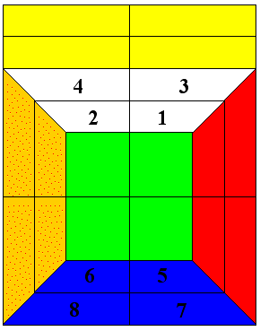
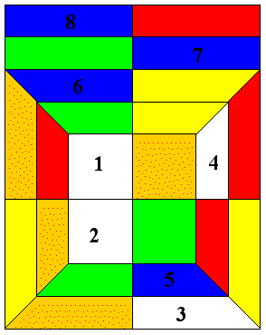
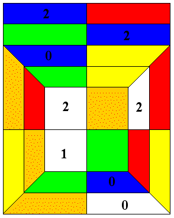
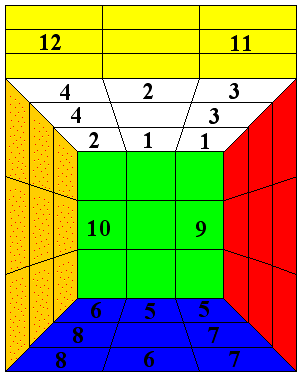
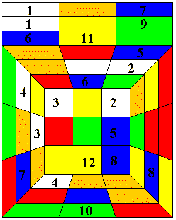
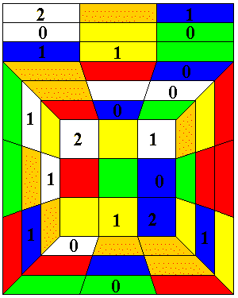
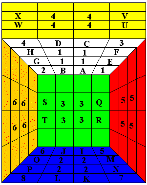
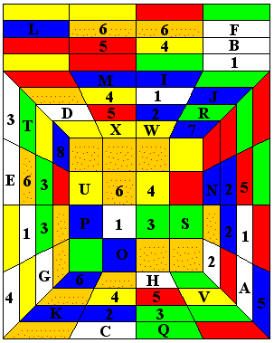
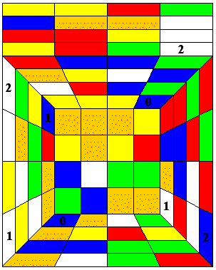

Blindfold cubing (now with pictures - there's a bit of irony)
Pictures screen-captured from Dave Barr's oinkleburger applet, modified
(to show details) and used with permission of Dave Barr.
[For a description of how to blindfold cube see
this document which
has tips.]
For completeness 2x2x2 cubes. I don't describe any 2x2x2 cubes here but they are
detailed in the .pdf file.
Pictures for the 2x2x2 cube
What it should look like (permutation) - all orientations should be 0.

A sample scrambled cube:
Permutation

Orientation

This cube has permutation 4 1 6 7 5 2 3 8 and orientation 2 2 2 0 0 1 0 2.
This page does not detail any 2x2x2 cubes that I have solved blindfolded.
All recording of the initial state of the cube is done after the cube has been solved.
This is a description of the first Rubik cube (3x3x3) that I solved with
one look (blindfold cubing) and the way I solved it. Nothing must be written down in advance
of solving the cube. (It must all be done mentally, except for the
twisting of course which must be done without looking at the
cube. Practice twists are not allowed. The notes here were all
made after the cubes were solved sometimes the next day.)
It helps to have a good memory! I have actually got a pretty terrible
visual memory but my memory for numbers is pretty good (I once remembered
pi to 830 decimal places).
(Pictures will follow the descriptions)
Edges are numbered thus: (UF, UB, UR, UL, DF, DB, DR, DL, FR, FL, BR, BL
are edges 1-12 respectively).
Edges are given an orientation as follows: the colours of the U and D
faces
are labelled high priority, those of the F and B faces medium priority and
those of the R and L faces low priority. Given an edge it lies in two
faces - if the part of the edge with higher priority lies in the face of
higher priority then the edge is correctly oriented (orientation 0)
otherwise it is incorrectly oriented (orientation 1).
(The sum of the edge orientations needs to be 0 (mod 2)).
Corners are numbered thus (D counts as 4, B as 2, L as 1, U, F, R as 0 and
the constituent parts summed - thus the UBL corner is corner
0+2+1=3).
Corners are oriented as follows: if a corner needs no clockwise twisting
to
get its high priority colour into a high priority face it is correctly
oriented, and has orientation 0, if it needs one twist it has orientation
1 (or rather it needs
+1 and so is really oriented +2) and if 2 then it has orientation 2 (or
rather it needs +2 and so is
really oriented +1). (The sum of the corner orientations needs to be 0
(mod 3)).
The edge and corner permutations need to have the same sign (viewed as
permutations in S_20 their product must be even).
Pictures for the 3x3x3 cube
What it should look like (permutation) - all orientations should be 0.

A sample scrambled cube:
Permutation

Orientation

This cube has corner permutation 2 3 5 6 8 4 7 1, corner orientation
1 2 0 1 2 0 1 2, edge permutation 6 11 2 4 12 10 8 7 5 3 9 1 and edge
orientation 0 1 0 1 1 0 1 1 0 1 0 0.
Back to the first 3x3x3 cube I solved blindfolded.
The state of the cube
(White was up, green was front)
Edge Permutation (this is the hardest bit to remember)
1 7 12 2 10 6 11 3 9 4 5 8 (were in positions 1-12 respectively)
Edge Orientation
The edges that weren't correctly oriented were those in positions 4,10,11,
12
Corner Permutation
1 6 8 7 4 2 3 5 (were in positions 1-8 respectively)
Corner Orientation
The corner that needed +1 to its orientation was in position 7.
The corners that had needed +2 to their orientation were in positions 1,
3, 5 and 6.
Also, I will use the notation Ch(Y,Z) to denote that the cube is being
positioned such that the face that was originally the Y face is put into
the U face position and the face that was originally the Z face is put
into the F face position.
The Solution
I started off by orienting the corners firstly the corners in positions 5
and 7. To do this, I performed Ch(F,D) and then the move
R'D'LDRD'L'DUL'UR2U'LUR2U2 - while I was at it I also 3-cycled the
corners in positions 5, 7 and 8 (5->7->8->5) using D'LD'R2DL'D'R2D2
before doing Ch(U,F).
This put corner 5 into its correct position but also put made the B face
such that its corners needed only to be diagonally switched to get them
into position.
Next I did D to get the corner originally in position 6 into position 5 so
that I could orient the corner in position 1 which I did with
R'D'LDRD'L'DUL'UR2U'LUR2U2 after which I again did D to get the corner
originally in position 6 into position 7. Then I did Ch(U,R) and again
did the move
R'D'LDRD'L'DUL'UR2U'LUR2U2 to complete the orientation of the corners.
After this I did the move D2 to get the corner originally in position 6
back into position 6.
After this I did Ch(U,B) and then the following move to
diagonally switch the corners F2RaF2Ra'Ua'F2Ua. This was followed bu
Ch(U,F).
At this point the position and orientation of the edges had not changed at
all but all the corners were correctly oriented and all but the corners in
positions 2 and 6 (which were transposed) were correctly positioned.
I decided next to orient the edges and I did the edges on the B face
first.
First I did Ch(B,D) and then the move FsUF'U'Fs'LFLF2ULsF2RsUF2. Then,
I did Ch(L,B) followed by the move LsFRsU2LsFRsB2U'RsB2LsU'B2 to reorient
the remaining edges and then again Ch(U,F). At this point the part of the
solution that I had planned was over and I had to plan as I went.
Fortunately, the edge permutation was still fixed in my mind. The first
thing I did was an edge 3-cycle in the U face. I did Ch(U,R) and then
did R2UFsR2BsUR2 before Ch(U,F).
This made the new edge permutation: 1 2 7 12 10 6 11 3 9 4 5 8.
This was followed by Ch(U,L) and then
L2F'UsL2DsF'L2 to 3 cycle the edges in positions 4, 12 and 8 (4->12->8).
Because the 3-cycle was done on the L face it didn't change the
orientations. I then again did Ch(U,F).
This brought edges 12 and 8 into position and the new edge
permutation was:1 2 7 3 10 6 11 8 9 4 5 12.
Following this was Ch(U,R) and then R2F'DsR2UsF'R2 to 3-cycle the edges
in positions 3, 7 and 11 (3->7->11) followed by Ch(U,F).
This move brought edges 11 and 7 into position and the new edge
permutation was: 1 2 5 3 10 6 7 8 9 4 5 11 12.
This was followed by Ch(U,L) and the move D'R2F'DsR2UsF'R2D before
Ch(U,F).
This 3 cycled edges 3, 10 and 4 (in positions 4, 5 and 10) (3->10->4)
making the new edge permutation:1 2 5 4 3 6 7 8 9 10 11 12.
After this, I decided that all the incorrect pieces should be in one face
so I did the move URaF2Ra'Ua'F2UaU to perform the edge double
transposition
of the edges 3 & 5 and 9 & 10 (in positions 5 & 3 and 9 & 10
respectively).
This made the new edge permutation: 1 2 3 4 5 6 7 8 10 9 11 12.
I decided to do the final permutation with F face as U face but in order
to do this I needed to reorient the corners 2 and 6 (in positions 6 and 2
respectively) to make their orientations correct for the F layer (as high
priority layer)). To do this I first did Ch(U,L) followed by the move
R'D'LDRD'L'DUL'UR2U'LUR2U2. Then I did Ch(F,L)
(before realizing that I wanted to actually do Ch(F,R) so I quickly made
this alteration) and made the move U'L2DF2D'L2B2D'R2DB2 to get everything
into the correct position. Finally, I did Ch(U,F) and put the
cube down.
Then I looked at the cube and it was indeed solved. : )
Currently my best time for solving the 2x2x2 cube blindfolded (time being
advance preparation time) is 12 seconds - for this, I ensure that the DBL
corner is correctly positioned and oriented so that I only have to
remember a permutation from S_7 and orientations of 7 pieces.
My second solved 3x3x3 cube whilst blindfolded
The state of the cube - this got me most corners already oriented
(Yellow was up, orange was front)
Edge Permutation
12 3 5 2 9 7 1 6 8 11 4 10
Edge Orientation
Only edges in positions 1,2,5,6 were correctly oriented
Corner Permutation (8 cycle)
2 5 7 6 4 3 8 1
Corner Orientation
Corners 1,5 needed +2,+1 respectively and corners 4,2 needed +2,+1
respectively.
I remembered the edge permutation like this: 12 3 (is sort of ascending,
digitwise anyway), 52 is number of cards in deck, 97=6*16+1 (OK, that was
a bit weird but I'm a mathematician), 16 is a square, 81is a bit like 911
but 100 short, 410 was what was left (it was closer to half 811 than 104
too).
I remembered the corner permutation like this: 25 is a square, 76
something to do with trombones, 43=25 (the first bit+18 the last bit in
reverse), 81 is a square. I was hopeful I wouldn't have to use such
obscure stuff and just be able to recall the numbers, which luckily I
was.
I decided to orient all the edges incorrectly because only 4 edges were
correctly oriented (less to remember with 4 as opposed to 8) and then flip
them all back at the end.
Strategy: corners 1,5 were oriented first as they were in prime position
(R'D'LDRD'L'DUL'UR2U'LUR2U2) then corners 2,4 (via
LCh(U,L)
R'D'LDRD'L'DUL'UR2U'LUR2U2
Ch(U,F)L').
Then I flipped the two pairs of edges 1,2 and 5,6:
U'FsUF'U'Fs'LFL'F2ULsF2RsUF2U
Ch(D,B)
U'FsUF'U'Fs'LFL'F2ULsF2RsUF2U
Ch(U,F)
Already, my pre-planning was at an end (except to flip all the edges at
the end) and I decided to work on the corners):
To this end, I decided to do try to switch 7,6 and 4,3 and worked out that
if I did:
F2 (get 4,3 in up layer)
U2 (switch corners diagonally but need to...)
RaU2Ra'Fa'U2Fa (fix edges)
F2 (get 7,6 in down layer)
then that would leave my corners permuted thus:
2 5 4 3 7 6 8 1, so that's what I did.
Then I did
B2
B'RB'L2BR'B'L2B2
B2
(a little overkill on the B's but not to take chances) to cycle corners
(1 5 8) and hence leave the corner permutation:
2 1 4 3 7 6 5 8.
By doing Ch(D,B)R'FR'B2RF'R'B2R2Ch(U,F) (cycling (6 7 5)) and then
L'BL'F2LB'L'F2L2BL'BR2B'LBR2B2 (double transposition (1 2)(3 4)- there
are better ways, but I didn't want to think of them at the time) I was
able to get the following corner permutation
1 2 3 4 6 5 7 8
.
Finally, Ch(D,B)U'L2DF2D'L2B2D'R2DB2Ch(U,F) got me to the point where my
corners were solved, but I had switched edges 7 and 9, so that my edge
permutation was:
12 3 5 2 7 9 1 6 8 11 4 10.
I decided to position the edges in the down layer first.
Ch(D,B)
R2UFsR2BsUR2 (cycling (1 7 9))
L2U'BsL2FsU'L2 (cycling (9 6 1))
Ch(U,F)
brought the edge permutation to
12 3 5 2 1 6 7 9 8 11 4 10.
Then U
RaF2Ra'Ua'F2Ua
U' was used to perform the double transposition (1 5)(8
11) to leave the edge permutation:
12 3 1 2 5 6 7 9 11 8 4 10.
Luckily this meant that with:
Ch(F,L)
R2FDsR2UsFR2
Ch(U,F)
I was able to bring both edges 8 and 10 into place giving the edge
permutation:
12 3 1 2 5 6 7 8 11 10 4 9
.
This was quickly followed by
B2U2B2U2B2U2 (to effect (1 2)(4 9)) and then
U'(R2U2R2U2R2U2)U (to effect (1 2)(9 11) - somewhat efficiently with the
Us) to obtain the edge permutation:
12 3 1 2 5 6 7 8 9 10 11 4.
R2UFsR2BsUR2 followed to cycle (12 3 1) to leave
1 12 3 2 5 6 7 8 9 10 11 4.
After this, I thought for a short time to see whether L was going to mess
up my orientation for corner 4. It wouldn't so I cycled (12 4 1) via:
L
L2U'BsL2FsU'L2 (nearly messed up here, as I was still a little
undecided so I started L2L'2L2 but I couldn't remember for definite
whether I had really done L'2
L')
to leave edge permutation: 4 1 3 2 5 6 7 8 9 10 11 12.
Then L2UBsL2FsUL2 finally positioned the edges.
I still had to flip all the edges and if I could remember the quick way to
do this I would, but I didn't want to risk it so I did it 2 at a time:
Ch(B,D)
FsUF'U'Fs'LFLF2ULsF2RsUF2 (fixing 11,12)
Ch(F,D)
FsUF'U'Fs'LFLF2ULsF2RsUF2 (fixing 9,10)
Ch(D,B)
LsFRsU2LsFRsB2U'RsB2LsU'B2 (fixing 5,8)
U2
LsFRsU2LsFRsB2U'RsB2LsU'B2 (fixing 6,7)
U2
Ch(U,F)
U2
LsFRsU2LsFRsB2U'RsB2LsU'B2 (fixing 1,3)
U2
LsFRsU2LsFRsB2U'RsB2LsU'B2 (fixing 2,4).
Then I put the cube down.
Then I looked at the cube and it was indeed solved. : )
Third cube
(Up was white, front green as I recall)
Corner Permutation 3 8 5 7 2 6 4 1
Corner orientation: those in positions 1,3,7 needed +2.
Edge permutation 7 11 8 4 3 5 6 9 10 12 2 1
Edges to be flipped in positions 6,8,1,10,9,11
Recalling of permutations: 38 is quite close to the year of a relative's
birthday, 57 Heinz varieties, 26 year of Queen's birth, 41 year of a
relative's birth
7-11 24 hour store in Headington nr. Oxford [also there are a few in the
US : ) ], 84 year of (most recent) LA Olympics, 35 is quite close to the
same year that 38 was close too, 69=2*35-1, 10,12,2,1 something like
10+2=12*1 and I wanted to 3-cycle 10->12->1 to place 10 and 12
correctly.
Solution
1. Flip edges in posns. 6,8
2. Flip edges in posns. 1,10
3. Flip edges in posns. 99,11
4. Orient corners in positions 1,3,7 (I can't recall if I did 1,7 then 3,7
or 3,7 then 1,7 (adding +2 to the corners on the Up face and +1 twice to
corner 7 - one for each of the U corners).
5. 3-cycle edges 10,12,1 (L2U2)3U'(F2U2)3U (the U and U' outside
parenthesies may have been the other way around.
6. 3-cycle edges 9,3,6
7. 3-cycle edges 8,7,11
8. Double transpose edges (9 8) and (3 7).
9. 3-cycle edges 8,5,7.
10. 3-cycle edges 5,7,6.
11. 3 cycle edges 11,1,2.
12. 3-cycle edges 9,11,1.
13. Transpose edges 1,2 and corners 5,7.
14. Diagonally double transpose corners (7 1) and (5 4).
15. 3-cycle corners 5,2,7.
16. 3-cycle corners 3,1,8.
17. 3-cycle corners 8,2,1.
18. Put cube down.
19. Look at cube and indeed find it done. : )
4th Cube
(Up was white, front green as I recall)
Corner Permutation: 1 6 8 5 2 3 7 4
Corner Orientation: They were all OK!
Edge Permutation: 8 5 7 6 11 9 2 4 10 12 1 3
Edge Orientation: The edges in positions 1,2,4,7,9 and 10 needed to be
flipped.
Solution
1. R2 flip edges in positions 3,4 (i.e. edges originally in positions 4,7) R2.
2. U' flip edges in positions 3,4 (i.e. edges originally in positions 1,2) U.
3. Flip edges in positions 9,10.
4. 3-cycle corners 3->8->4. (L2 cycle in U face L2)
5. U' diagonal switch corner on F face (F2RaF2Ra'Ua'F2Ua) U.
(At this point the edges are unchanged and corners 2,4 need to be swapped)
6. 3-cycle edges 5->8->7.
7. Double transpose edges (5 11)(6 9) (Rs2F2Rs2B2).
8. Double transpose edges (7 2)(8 4).
9. 3-cycle edges (3 10 12) (L2U2L2U2L2U2U'F2U2F2U2F2U2U - a little
redundancy here)
10. 3-cycle edges (2 9 11).
11. 3-cycle edges (11 3 1).
12. 3-cycle edges (9 11 3). (U' 3-cycle in R face U)
13. 3-cycle edges (3 4 1).
14. Transpose edges (3 4) and corners (2 4) (T-cross).
15. Put down cube.
16. Remove blindfold and look at cube and indeed it is done. : )
5th-7th Cubes
5th cubes done on train on way to interview (no details)
6th & 7th cubes done on noisy train on way back from interview (no
details)
8th cube
(Up was white, front green)
Corner Permutation: 6 2 7 5 3 1 8 4
Corner Orientation: Corners 3,6 and 7 needed +2, corners 1,2 and 8
needed +1.
Edge Permutation: 10 11 7 2 5 8 4 12 3 9 1 6
Edge Orientation: The edges in positions 2,12,1,3,5 and 7 needed to be
flipped.
Solution
1. Fix orientations of edges in positions 2,12.
2. Fix orientations of edges in positions 1,3.
3. Fix orientations of edges in positions 5,7.
4. Fix orientations of corners in positions 3,1.
5. Fix orientations of corners in positions 6,2.
6. Fix orientations of corners in positions 7,8.
7. 3-cycle corners (3 5 8).
8. 3-cycle corners (4 8 5).
9. 3-cycle corners (1 4 8).
10. Double transpose corners (6 4)(7 1).
11. 3-cycle corners (1 4 3).
12. 3-cycle corners (7 6 8).
13. 3-cycle corners (5 6 8).
14. Double transpose edges (3 9)(5 8).
15. Transpose corners (5 6) and edges (5 8). (T-cross)
16. 3-cycle edges (8 12 4).
17. 3-cycle edges (11 1 12).
18. Double transpose edges (9 11)(7 1).
19. Double transpose edges (9 11)(10 12).
20. 3-cycle edges (6 4 3).
21. 3-cycle edges (1 12 10).
22. 3-cycle edges (2 12 10).
23. 3-cycle edges (12 4 3).
24. 3-cycle edges (10 12 3).
25. Put down cube.
26. Remove blindfold and look at cube and indeed it is done. : )
9th and 10th cubes
(Up was white, front green)
These occurred in 2 failed attempts to do 2 cubes blindfolded - the first
was on my second attempt at such a feat, the second on my third attempt
[was a double transposition of corners out on the other cube. : (]
I seem to have lost my records of the initial states of these cubes - possibly, I didn't
record them as I may not have recalled the initial positions after solving the cubes.
11th and 12th cubes
(In both cases Up was White and front was green)
I did these cubes consecutively (on one look for the both of them - not
one look each). : )
Conditions were made worse with a bad cold. I did these cubes whilst
listening to the 7th game of the 2001 World Series.
I started c. 10 minutes before the game was due to start and finished the
second cube in the second innings.
The following is the state of the cubes (possibly I have some details in
the wrong cubes, but I think this was the right way - certainly the
orientations and permutations are correct but there's a small chance I may
have listed them for the wrong cubes - e.g. switched the edge permutations
for cubes 11 and 12.)
11th Cube
Corner Permutation: 4 1 7 3 6 8 2 5
Corner Orientation: Corners in positions 1, 3 and 8 needed +1, corners in
positions 5, 4 and 6 needed +2.
Edge Permutation: 2 1 10 3 9 8 7 12 6 5 11 4
Edge Orientation: Edges in positions 3, 4, 9, 11, 5 and 8 needed to be
flipped.
Remembering the permutations: 41 family birthday/year really, 73 Double
Agent (OK, so it's a bit tacky), C. Myers, Square.
To be honest the edges were not bad at all - on doing a cross on the top,
I'd get 1,2 and 3 into position. 987 was descending as was 654 which was
split by 11 which was correctly placed.
The orientations on this cube were harder so I did the cube first and
stored the orientations in short term memory.
12th Cube
Corner Permutation: 7 2 4 3 8 5 1 6
Corner Orientation: Corners in positions 3 and 6 needed +1, corners in
positions 5 and 8 needed +2.
Edge Permutation: 5 12 1 4 2 3 6 10 9 7 11 8
Edge Orientation: Edges in positions 2, 4, 5 and 7 needed to be flipped.
Remembering the permutations: 72 my birthyear, 43 was descending, 85
C. Ficatier, 16 Square.
512 (RAM in my machine), 14 I just sort of remembered this as what was
left, 2,3,6,10 2*3=6 and I remembered 10 on the end, 9, 7, 11, 8 - 9 and
11 were placed already and 7,8 came in that order.
Orientations: since there wasn't manyhere I just remembered them. I always
try to remember them in the pairs that I am going to orient together. Here
it was 2,4 (very straightforward on top) and 5,7 (D'(similar move to 2,4
but with D in U position and F at back)D) - for the corners 5 and 6 paired
and so did 3,8 on D'(look at R side to do move)D.
13th Cube
(Up was white, front green)
Corner Permutation: 6 2 8 3 1 4 7 5
Corner Orientation: Corners in positions 7, 8 and 4 needed +1. Corners in
positions 1,2 and 3 needed +2.
Edge Permutation: 10 8 11 5 3 7 6 9 4 2 1 12
Edge Orientation: Edges in positions 1,3 2,10, 9,11, 5 and 6 needed to be
flipped.
(This was part of an attempt to do 2 cubes. A yellow sticker came off the
second cube mid-solution (I had just finished orienting the edges) so I
had to abort the mission. That cube was as follows:
Corner Permutation: 5 4 2 6 1 8 7 3
Corner Orientation: Corners in positions 1 and 6 needed +1. Corners in
positions 2 and 5 needed +2.
Edge Permutation: 7 8 2 5 11 10 6 1 12 9 3 4
Edge Orientation: Edges in positions 1,3,6,7,9,10,11 and 12 needed to be
flipped.
NB This cube attempt was aborted but no mistakes had been made.)
14th Cube
(Up was white, Front was green)
I did this cube as a time trial - I had been asked how long it takes to
memorize a 3x3x3 cube before solving blindfolded and didn't really know
the answer. This cube took 2 minutes 47 seconds to memorize.
I can't recall the details of this one but the corner permutation was:
Corner Permutation: 1 2 7 8 3 6 5 4
15th and 16th Cubes
(In both cases Up was white and Front was Green)
I did these cubes together as a time trial. The cubes took 15-16 minutes
to memorize - I was going off the clock on my VCR - no seconds.
The state of the cubes are given below.
Again, I did the more difficult (to memorize) cube first - mainly it
was because of the corner orientation.
15th Cube
Corner Permutation: 1 4 2 5 7 8 6 3
Corner Orientation: Corners in positions 3, 4 and 8 needed +1. Corners in
positions 5 and 1 needed +1, corners in positions 7 and 2 needed +2.
Edge Permutation: 7 3 6 1 10 2 11 12 8 5 4 9
Edge Orientation: Edges in positions 2, 5, 6 and 7 needed to be flipped.
16th Cube
Corner Permutation: 3 1 6 8 7 2 4 5
Corner Orientation: Corners in positions 8, 1 and 6 needed +1.
Corneres in positions 7, 2 and 5 needed +2.
Edge Permutation: 6 10 8 9 12 7 11 5 1 2 3 4
Edge Orientation: Edges in positions 2, 4, 6 and 8 needed to be
flipped.
17th Cube
This cube was done on the bus on the way to Newcastle.
(Up was white, Front was green)
Corner Permutation: 4 8 7 6 2 1 3 5
Corner Orientation: Corners in positions 7,8 and 3 needed +1. Corners in
positions 2, 4 and 1 needed +2.
Edge Permutation: 11 8 10 9 3 4 7 12 5 1 6 2
Corner Orientation: Edges in positions 3,4,9 and 12 needed flipping.
18th Cube
(Up was white, Front was green)
Corner Permutation: 3 6 1 2 7 5 8 4
Corner Orientation: Corners in positions 1 and 2 needed +1. Corners in
positions 8 and 4 needed +2.
Edge Permutation: 7 12 8 11 1 2 10 3 4 9 6 5
Edge Orientation: Edges in positions 7, 8, 9, 4, 1 and 3 needed to be
flipped.
19th Cube
(Up was white, Front was green)
Corner Permutation: 4 8 3 6 1 7 2 5
Corner Orientation: Corners in positions 1,3 and 4 needed +1. Corners in
positions 5,7 and 8 needed +2.
Edge Permutation: 2 12 4 5 1 3 6 9 10 8 7 11
Edge Orientation: Edges in positions 2, 3, 6, 7, 4, 5, 9 and 12 needed to
be flipped.
20th Cube
(This cube was done under the cloth at the babrer shop whilst getting my
hair cut)
(Up was white, Front was green)
Corner Permutation: 8 6 3 5 2 4 7 1
Corner Orientation: Corners in positions 2,3,4 and 5 needed +1. The corner
in position 6 needed +2.
Edge Permutation: 10 4 11 12 7 2 1 9 8 5 3 6
Edge Orientation: Edges in positions 1, 2, 3, 4, 5, 7, 10 and 12 needed to
be flipped.
21st Cube
(Up was white, Front was green)
Corner Permutation: 2 1 8 3 5 6 4 7
Corner Orientation: Corner in positions 2 needed +1. Corners in positions
1,3,5 and 8 needed +2.
Edge Permutation: 8 12 6 7 9 3 2 1 5 4 10 11
Edge Orientation: Edges in positions 1,4,5,6,7,9,10 and 12 needed to be
flipped.
Solution
I flipped the edges first this time.
1. Flip edges 1,4
2. Flip edges 10,12.
3. Flip edges 9,8
4. Flip edges 7,6.
5. Flip edges 8,5.
6. Twist edges 2,1 (+1,+2).
7. Twist edges 3,5 (+1,+2).
8. Twist edges 3,8 (+1,+2).
9. 3-cycle corners (2 1 8).
10. 3-cycle corners (8 7 4).
11. 3-cycle corners (4 3 1).
12. 3-cycle edges (6 12 7).
13. 3-cycle edges (3 2 9).
14. 3-cycle edges (2 9 1). (This and 13 could have been done in 1 shot but
I did it this way.)
15. Double transpose edges (2 6)(3 7).
(Here I realised that I had misremembered edge 10 as 9 (had 2 9's in mind)
but fortunately I could tell which was which as I recalled the original
colours; otherwise I'd have to check which gave an even permutation -
time consuming)
16. Double transpose edges (10 11)(3 12).
17. Double transpose edges (5 4)(3 12). (This and 15 could have been
done in 1 shot but I did it this way.)
18. 3-cycle edges (12 10 5).
19. 3-cycle edges (9 4 8).
20. 3-cycle edges (4 5 2).
21. 3-cycle edges (1 2 5). (via double transposition (2 5)(9 11)
followed by double transposition (1 5)(9 11)).
22. I put the cube down.
23. I removed the blindfold and indeed it was solved.
22nd Cube
(Up was white, Front was green)
Corner Permutation: 8 7 3 4 5 1 6 2
Corner Orientation: Corners in positions 2 and 8 needed +1. Corners in
positions 4 and 1 needed +2.
Edge Permutation: 9 12 4 1 11 2 10 5 3 8 6 7
Edge Orientation: Edges in positions 2,4,9,10,11 and 12 needed to be
flipped.
22nd Cube
(Up was white, Front was green)
Corner Permutation: 4 5 3 6 8 1 7 2
Corner Orientation: Corners in positions 3,8,7,2 and 4 needed +1. Corners
in positions 1 and 6 needed +2.
Edge Permutation: 8 9 4 3 7 6 2 11 12 5 10 1
Edge Orientation: Edges in positions 2,4,7,10,9 and 11 needed to be
flipped.
23rd Cube
(Up was white, Front was green)
Corner Permutation: 6 3 5 1 4 8 7 2
Corner Orientation: Corners in positions 1,4 and 7 needed +1.
Corners in positions 2, 3 and 6 needed +2.
Edge Permutation: 6 8 9 7 4 2 1 3 12 11 10 5
Edge Orientation: Edges in positions 2,4,7,10,9 and 11 needed to be
flipped.
24th Cube (done on a train outward journey to an interview)
(Up was white, Front was green)
Corner Permutation: 3 5 4 2 7 8 6 1
Corner Orientation: The corner in position 6 needed +1.
Corners in positions 2, 1, 3 and 8 needed +2.
Edge Permutation: 5 3 8 12 1 11 9 2 4 7 10 6
Edge Orientation: Edges in positions 2,6,10 and 11 needed to be flipped.
25th Cube (done on a train - return journey)
(Up was white, Front was green)
Corner Permutation: 4 2 6 1 5 3 7 8
Corner Orientation: Corners in positions 1, 2 and 5 needed +1.
Edge Permutation: 12 8 3 5 4 7 1 9 10 11 2 6
Edge Orientation: Edges in positions 5,6,7, 8, 11 and 12 needed to be
flipped.
Rubik Revenge
OK, here are the details of the first Rubik Revenge I solved blindfolded.
(February 17th 2002)
As far as I am aware this has never been done before.
It was my sixth attempt (the first two I forgot the exact way of doing
one of the algorithms - I didn't realize until afterward the 2nd attempt
and so messed up quite a bit, the next 2 I was interrupted (the former
heavily, the latter not so and I probably slipped up earlier) and the 5th
I lost concentration and forgot what I'd just done so I aborted that
attempt.
On this attempt I had a bit of fortune with the initial centres. Generally
my strategy would be to start the cube so that no centre squares from the
U face lay in the D face (this is always possible as there are just 4
squares and 6 faces) but here there were 3 on one side and 1 on the
opposite side, so I used the one with 3 as U face - fortunately there were
2 from the D face already there too and the B centres were quite nice.
First the description of the cube - labelling of pieces and set up:
the corner pieces are labelled as in the regular Rubik cube that is 1-8
and will a correction of 0,+1 or +2 needed for their orientation.
The centres are labelled by colour (U=1,D=2,F=3,B=4,R=5,L=6 - in my case
White=1,Blue=2,Green=3,Yellow=4,Red=5,Orange=6).
They are memorized in groups of 4 according to face (the order of the
faces being the same as that of the colours U,D,F,B,R,L) and within each
face from left to right then up to down according to the net:
(In particular, for instance the centres from the D face are memorized
those near the F face before those near the B face and those near the L
face before those near the R face - so in terms of nearness: near FL, FR,
BL, BR.)
The edges edges are labelled A-X as follows:
UFR=A (the rightmost piece of the UF edge - White-Green in my case)
UFL=B (the leftmost piece of the UF edge - White-Green in my case)
UBR=C
UBL=D
URF=E
URB=F
ULF=G
ULB=H
DFR=I
DFL=J
DBR=K
DBL=L
DRF=M
DRB=N
DLF=O
DLB=P
FRU=Q
FRD=R
FLU=S
FLD=T
BRU=U
BRD=V
BLU=W
BLD=X
They are memorized in the natural order (the one that in the solved
position would give them in alphabetical order). It is perhaps easier to
remember them in groups of 4.
It is not necessary to remember orientations as for the cube: an edge can
only be placed in a position one way. If the edge appears to be oriented
incorrectly it is because te wrong edge of the edge pair is in place.
Here is the description of the cube I solved blindfolded.
Edge Permutation:
HQUW
CGSX
PRID
KEJF
LMAO
TNVB
Centre Permutation
1115
2231
5353
4544
2366
6426
The centre permutation was quite nice on this occasion.
Corner Permutation
84627513
Corner Orientation
22011201
I solved the corners first (first orienting and then permuting) with moves
that do not alter the centre squares or edges. (The corner permutation was
even - had it been odd, then I would have needed to swap a couple of
edges.)
I then solved the centres with moves that do not alter the corners or
edges.
Finally I solved the edges with moves that do not alter the corners or
edges. I had to flip the last edge.
In particular, the order of solution can be changed - centres can be
solved first, then edges then corners etc., the only restriction being
that if the corner permutation is odd then at some point corners and edges
will have to be moved at the same time (possibly 2 of each).
The cube took about 16-17 minutes to memorize although I memorized it in
the morning and did not begin solving until the evening (after Newcastle
won their FA cup tie) - I had a quick recheck of the details to refresh my
memory before I donned the blindfold and solved the cube. After I was
done, I put the cube down (White face up and Green face, facing me). Then
I removed the blindfold and saw it was solved. It was only after this that
I wrote down the details of the cube (the initial set-up) - all prior work
was done mentally, of course.
Pictures for the 4x4x4 cube
What it should look like (permutation) - all orientations should be 0.

A sample scrambled cube:
Permutation

Orientation

This cube has edge permutation:
W X I M
R J D T
H O C Q
V A G K
N S U P
B F E L
centre permutation:
4 1 5 2
4 5 2 3
6 4 1 3
4 5 6 6
2 5 2 1
6 3 1 3
corner permutation:
7 8 1 3 2 6 5 4
and corner orientation:
0 1 2 2 1 0 2 1.
26th Cube (done on a bus) (not counting Revenge in the count as I
haven't counted any 2x2x2's either)
(Up was white, Front was green)
Corner Permutation: 1 2 6 8 5 4 7 3
Corner Orientation: Corners in positions 2 and 8 needed +1. Corners in
positions 1 and 4 needed +2.
Edge Permutation: 4 12 9 11 3 5 8 1 6 2 7 10
Edge Orientation: Edges in positions 1, 4, 9, 10, 11 and 12 needed to be
flipped.
Solution
U'(twist UFR (1), UBR (2))U(twist DBR (1), DFR (2))
U(flip UL, UB)U'(flip FL, FR)(flip BL, BR)
Corner cycle (4 8 6) Corner cycle (8 3 1) Corner cycle (1 3 4)
Parity Correction: T-switch Corners (3 4) Edges (4 12)
Edge Cycle (11 12 4) Edge Cycle (12 10 2) Edge Cycle (11 6 7)
Edge Cycle (9 11 6) Edge Cycle (3 8 1) Edge Double Transposition (1 7)(3
6) Edge Cycle (5 7 6)
27th Cube (done on bus -return journey)
(Up was white, Front was green)
Corner Permutation: 2 1 4 6 7 8 5 3
Corner Orientation: Corners in positions 2 and 7 needed +1. Corners in
positions 6 and 8 needed +2.
Edge Permutation: 4 5 3 7 11 9 1 2 12 8 6 10
Edge Orientation: Edges in positions 5, 6, 7, 9, 10 and 11 needed to be
flipped.
I'm a bit behind on this page and hope to update it over the next day or
two. I have about 7 new solved cubes to put up including 3 at one go
(unofficially equalling the world record).
28th and 29th Cubes (on a train journey to a follow-up interview)
This was an attempt to do 3 cubes blindfolded. I got them memorized
(starting from Newcastle) by Durham (18 minutes) plus a little refreshing
afterwards but thought I should wait for the ticket collector so as not to
be interrupted mid-attempt. That took over 90 minutes (past York) from
leaving Newcastle so perhaps I wasn't up for it by then.
Anyway, the first cube I got a bit confused over (ending up with just two
edges wrong it seemed) and I came back to it during the second cube,
having remembered that I needed to switch 2 corners) but I had got a
couple of edges wrong before and ended up a double transposition (1 3)(9 11)
of edges out (all correctly oriented) but the remaining 2 cubes were
solved correctly when I finally removed the blindfold.
(Notes: Cube 1 (unsolved) (Up - white, Front - green: CP: 6 5 8 7 4 1 3 2,
CO: Corners in 3,4,8 needed +1, corners in 1,5,6 +2, EP: 11 7 8 9 12 5
10 4 3 2 1 6, EO: Edges in positions 1,5,3,4,10,12 needed to be
flipped.)
28th Cube
(Up was white, Front was green)
Corner Permutation: 3 1 4 2 6 8 5 7
Corner Orientation: Corners in positions 3, 2, 5 and 8 needed +1. Corners
in positions 1,4,6 and 7 needed +2.
Edge Permutation: 11 10 8 7 12 9 4 3 1 5 6 2
Edge Orientation: No edges needed to be flipped
29th Cube
(Up was white, Front was green)
Corner Permutation: 8 2 1 5 7 3 4 6
Corner Orientation: The corner in position 6 needed +1. The corners in
positions 2, 1, 7 and 8 needed +2.
Edge Permutation: 8 1 9 6 4 11 2 7 12 3 5 10
Edge Orientation: Edges in positions 1, 3, 2, 11, 5 and 8 needed to be
flipped
30th, 31st and 32nd Cubes
This was done later on the same day in a hotel (partly whilst Arsenal were
on TV winning 4-1 hopefully, at time of writing, before doing rather less
well to Newcastle in the weekend).
I took a bit longer to memorize the cubes than the unsuccessful attempts.
These cubes were also harder to memorize. some coincidental similarities
made the task of getting the correct data associated with the correct cube more
difficult.
Unofficially, this attempt equalled the world record for 3x3x3 blindfold
cubing.
30th Cube
(Up was white, Front was green)
Corner Permutation: 5 2 1 4 8 6 7 3
Corner Orientation: The corners in positions 1 and 2 needed +1. The
corners in positions 7 and 4 needed +2.
Edge Permutation: 9 6 7 5 3 6 8 11 12 10 4 1
Edge Orientation: Edges in positions 1, 10, 2 and 8 needed to be
flipped.
31st Cube
(Up was white, Front was green)
Corner Permutation: 8 3 4 2 6 1 5 7
Corner Orientation: The corners in positions 1, 5 and 7 needed +1. The
corners in positions 3, 6 and 4 needed +2.
Edge Permutation: 9 7 8 5 11 3 2 4 12 10 6 1
Edge Orientation: Edges in positions 1, 10, 2, 4, 6 and 11 needed to be
flipped.
32nd Cube
(Up was white, Front was green)
Corner Permutation: 6 4 8 1 7 5 2 3
Corner Orientation: The corner in position 2 needed +1. The
corners in positions 1, 3, 4, 5, 6, 7 and 8 needed +2.
Edge Permutation: 1 3 5 2 9 6 11 4 7 10 12 8
Edge Orientation: Edges in positions 1, 5, 10, 12, 2 and 4 needed to be
flipped.
Back to single cubes. : )
33rd Cube (done on return train journey)
(Up was white, Front was green)
Corner Permutation: 1 7 3 6 4 8 2 5
Corner Orientation: The corners in positions 6, 5 and 8 needed +1. The
corners in positions 2, 7 and 3 needed +2.
Edge Permutation: 2 5 7 4 11 8 1 9 6 10 12 3
Edge Orientation: Edges in positions 2, 6, 10, 12, 1 and 4 needed to be
flipped.
34th Cube (done on same return train journey)
(Up was white, Front was green)
Corner Permutation: 3 7 1 6 5 4 2 8
Corner Orientation: The corner in position 3 needed +1. The corners in
position 1, 2, 4, 5, 6, 7 and 8 needed +2.
Edge Permutation: 12 6 1 4 5 3 2 11 9 8 10 7
Edge Orientation: Edges in positions 3, 12, 5 and 7 needed to be
flipped.
35th Cube (Time Trial)
(Up was white, Front was green)
Corner Permutation: 8 4 3 7 6 2 1 5
Corner Orientation: The corners in positions 4 and 7 needed +1. The
corners in positions 6 and 3 needed +2.
Edge Permutation: 5 2 10 8 7 9 3 1 6 12 11 4
Edge Orientation: Edges in positions 2, 12, 5 and 8 needed to be
flipped.
The cube was memorized in 95 seconds (earlier I had done one in 68 seconds
but was disturbed and had to put the cube down during solving) and solved
blindfolded in 8 minutes 53 seconds - a total of 10 minutes 28 seconds
from start to finish.
36th Cube
This cube was done on an aeroplane between Newcastle and Schiphol.
(Up was white, Front was green)
Corner Permutation: 8 3 5 6 7 1 4 2
Corner Orientation: The corners in positions 2,4 and 5 needed +1.
Edge Permutation: 12 6 1 7 10 8 3 5 11 4 2 9
Edge Orientation: Edges in positions 2, 6, 7, 9 and 12 needed to be
flipped.
37th Cube
This cube was done for a friend's birthday one afternoon (there's a
cryptic clue to where it was done there too if you have inside info.).
This cube was done in front of a fairly sizeable crowd.
Unusually, I corrected the edge orientation before the corner
orientation.
(Up was white, Front was green)
Corner Permutation: 7 4 6 8 3 2 5 1
Corner Orientation: The corners in positions 1, 2, 5, 6, 7 and 8 needed +2.
Edge Permutation: 8 7 10 4 12 11 3 6 9 1 5 2
Edge Orientation: Edges in positions 9, 12, 7, 8, 1, 3, 2 and 4 needed to be
flipped.
38th Cube
(Up was white, Front was green)
Corner Permutation: 2 5 8 7 6 1 3 4
Corner Orientation: The corner in position 8 needed +1. The corners in positions
4, 2, 5 and 6 needed +2.
Edge Permutation: 8 10 2 7 6 11 9 5 3 1 3 4 12
Edge Orientation: Edges in positions 3, 4, 5, 8, 10 and 12 needed to be
flipped.
39th Cube
(Up was white, Front was green)
This was a timed Revenge. It took 1 hour 7 minutes and 14 seconds to solve (the
blindfolded part, not including memorization).
Edge Permutation:
BACN
HQVR
SEOT
KDGW
LPMI
FJXU
Centre Permutation
1121
5364
3412
4532
6625
6543
Corner Permutation
8 7 1 4 6 5 3 2
Corner Orientation
The corners in positions 2, 6, 3, 7, 1 and 5 needed +2.
40th Cube
(Up was white, Front was green)
This was the first of a series of 3 (done individually), 40, 41 and 42, that I did on a
train journey to London.
Corner Permutation: 5,3,7,4,2,8,1,6
Corner Orientation: The corners in positions 1,5,2,4 and 6 needed +1. The corners
in positions 3 and 7 needed +2.
Edge Permutation: 11,12,7,3,9,4,10,8,6,2,1,5
Edge Orientation: Edges in positions 2,4,9,10,11 and 7 needed to be flipped.
41st Cube
(Up was white, Front was green)
Corner Permutation: 6,8,3,5,7,4,1,2
Corner Orientation: The corners in positions 1 and 2 needed +1. The corners
in positions 3 and 8needed +2.
Edge Permutation: 1,3,9,6,10,11,7,12,4,8,5,2
Edge Orientation: Edges in positions 1,3,9,6,10,11,7,12,4,8,5 and 2 needed
to be flipped.
42nd Cube
(Up was white, Front was green)
A passenger called George witnessed this.
Corner Permutation: 3,1,4,5,6,7,2,8
Corner Orientation: The corners in positions 1,3 and 8 needed +1. The corners
in positions 5,7 and 4 needed +2.
Edge Permutation: 5,1,7,2,9,10,7,12,4,6,11,3
Edge Orientation: Edges in positions 1,4,7 and 8 needed to be flipped.
43rd Cube
(Up was white, Front was green)
On the plane from Newcastle to the Isle Of Man.
A passenger called Stephen Westgarth witnessed this.
Corner Permutation: 6, 8, 2, 1, 3, 5, 7, 4
Corner Orientation: The corner in position 1 needed +1. The corners in positions
3, 5, 6 and 8 needed +2.
Edge Permutation: 4, 5, 9, 10, 7, 2, 6, 11, 8, 3, 12, 1.
Edge Orientation: The edges in positions 1, 2, 4, 7, 10 and 12 needed to be flipped.
44th Cube
(Up was white, Front was green)
This was a timed Revenge. It took 46 minutes and 33 seconds, a new personal best. (Done on 7th
July 2002.)
Edge Permutation: DLSN, CWOG, EHVQ, XKJU, MPAB, TRIF
Centre Permutation: 6411, 6233, 5562, 4435, 3421, 1562
Corner Permutation: 6, 4, 8, 3, 1, 5, 7, 2
Corner Orientation: The corners in positions 2, 4, 5 and 7 needed +1. The corner in position 1
needed +2.
45th Cube
(Up was white, Front was green)
This was a timed Revenge. It took 48 minutes and 31 seconds. (Done on 8th
July 2002 in the early hours.)
Edge Permutation: QCEO, RXHB, LFSU, DMTJ, NIKP, VAGW
Centre Permutation: 3135, 2433, 6421, 2562, 5561, 4614
Corner Permutation: 3, 8, 4, 5, 2, 6, 1, 7
Corner Orientation: The corners in positions 3, 4 and 8 needed +1.
46th Cube
(Up was white, Front was green)
This was another Revenge. I didn't get an exact time but it was in the 45-47 minute region.
Edge Permutation: FLER, DNIH, GKXA, MJBS, CWVQ, POTU
Centre Permutation: 2156, 2325, 3341, 6451, 5361, 2464
Corner Permutation: 3, 4, 6, 7, 5, 1, 2, 8
Corner Orientation: The corners in positions 4, 6 and 7 needed +2.
47th Cube
(Up was white, Front was green)
This was a timed Revenge. It took 45' 30". It was done fairly soon after the previous Revenge.
This was the first time I had succeeded in blindfold Revenge on consecutive attempts (there was one failed
attempt between the 44th and 45th cubes) and was the 4th correctly solved Revenge in the last 7 attempts (of the 3
failed attempts 2 were very close).
Edge Permutation: WSKA, OPGD, FCVH, EQIL, JBUM, TRXN
Centre Permutation: 6142, 5421, 3353, 1426, 1234, 5566
Corner Permutation: 1, 6, 2, 4, 3, 7, 8, 5
Corner Orientation: The corners in positions 3, 5, 6 and 7 needed +1. The corner in position 1 needed +2.
48th Cube
(Up was white, Front was green)
Corner Permutation: 6, 4, 5, 3, 8, 2, 1, 7
Corner Orientation: The corners in positions 2 and 5 needed +1. The corners in positions 1, 4 needed +2.
Edge Permutation: 11, 7, 3, 2, 1, 9, 6, 5, 8, 4, 10, 12
Edge Orientation: The edges in positions 2, 4, 8, 9, 11 and 12 needed flipping.
49th Cube
(Up was white, Front was green)
This was a timed cube. Total time (memorization and solving) was 10 minutes and 30 seconds.
Corner Permutation: 5, 6, 2, 8, 4, 7, 1, 3
Corner Orientation: The corners in positions 2, 4, 5, 7 and 8 needed +1. The corners in positions 1 and 6 needed +2.
Edge Permutation: 7, 2, 8, 9, 5, 12, 3, 6, 10, 1, 4, 11
Edge Orientation: Fortunately, no edges needed flipping.
50th Cube
(Up was white, Front was green)
Corner Permutation: 1, 5, 7, 8, 6, 4, 3, 2
Corner Orientation: The corners in positions 1 and 5 needed +1. The corners in positions 7 and 8 needed +2.
Edge Permutation: 4, 1, 10, 11, 8, 12, 7, 2, 9, 5, 6, 3
Edge Orientation: The edges in positions 2, 3, 6, 7, 8 and 11 needed to be flipped.
51st Cube
(Up was white, Front was green)
This was a timed cube. Total time (memorization and solving) was 9 minutes and 40 seconds a new personal best.
Corner Permutation: 2, 4, 3, 6, 7, 5, 1, 8
Corner Orientation: The corner in position 3 needed +1. The corners in positions 1, 2, 5 and 6 needed +2.
Edge Permutation: 10, 4, 12, 11, 5, 6, 3, 7, 8, 9, 1, 2
Edge Orientation: The edges in positions 3 and 12 needed to be flipped.
52nd Cube
(Up was white, Front was green)
Corner Permutation: 7, 3, 1, 2, 6, 4, 8, 5
Corner Orientation: The corners in positions 4 and 5 needed +1. The corners in positions 1, 2, 3, 7 and 8 needed +2.
Edge Permutation: 9, 2, 11, 12, 10, 8, 1, 7, 3, 6, 5, 4
Edge Orientation: The edges in positions 1, 2, 3, 4, 5, 8, 9 and 12 needed to be flipped.
53rd Cube
(Up was white, Front was green)
Corner Permutation: 2, 3, 4, 6, 7, 1, 5, 8
Corner Orientation: The corner in position 5 needed +1. The corner in position 3 needed +2.
Edge Permutation: 6, 12, 4, 1, 3, 2, 10, 7, 5, 11, 9, 8
Edge Orientation: The edges in positions 1, 2, 3, 4, (*) 5, 6, 8 and 10 needed to be flipped.
(*) My memory may be slightly incorrect here - possible it was just 2 and 3; I had a failed speed attempt
at a similar time and may have recorded the first 4 edges of that cube in terms of needing to be flipped.
54th Cube
(Up was white, Front was green)
Corner Permutation: 5, 4, 8, 2, 6, 7, 3, 1
Corner Orientation: The corners in positions 1, 3, 6, 7 and 8 needed +1. The corners in positions 4 and 5 needed +2.
Edge Permutation: 8, 1, 9, 4, 2, 5, 7, 6, 10, 3, 11, 12
Edge Orientation: The edges in positions 3, 5, 6, 8, 11 and 12 needed flipping.
[This was the first cube in an attempt at simultaneous 3x3x3 and 4x4x4 - the Revenge was narrowly missed. The U, D, F
and B sides were all solved but the R and L sides were not quite. 2 orange centre pieces were on the red side and
conversely. : (]
55th Cube
(Up was white, Front was green)
Corner Permutation: 8, 6, 4, 3, 7, 1, 5, 2
Corner Orientation: The corners in positions 3, 5 and 7 needed +1. The corners in positions 2, 4 and 8 needed +2.
Edge Permutation: 4, 5, 1, 12, 6, 9, 8, 2, 7, 10, 3, 11
Edge Orientation: The edges in positions 1, 2, 3, 4, 7 and 11 needed to be flipped.
(Like the 54th cube this was an attempt to do a 3x3x3 and a 4x4x4 simultaneous. The edges in the revenge were all OK,
but I messed up more than the previous attempt - corners and centres weren't quite right.)
56th Cube
(Up was white, Front was green)
This cube was done in my lunch break. : )
Corner Permutation: 1 2 5 4 3 8 7 6
Corner Orientation: The corners in positions 6, 7 and 8 needed +1. The corners in positions 1, 2 and 3 needed +2.
Edge Permutation: 10 4 2 12 9 6 8 5 1 11 3 7
Edge Orientation: The edges in positions 5, 7, 3, 9, 1 and 4 needed to be flipped.
Due to my not keeping the file up to date for a while and going on scraps of paper, the next few cubes are probably not recorded in the order they were done.
Cube
(Up was white, Front was green)
Corner Permutation: 3, 6, 4, 7, 5, 8, 2, 1
Corner Orientation: The corners in positions 4, 6, 7 and 8 needed +1. The corner in position 2 needed +2.
Edge Permutation: 9, 6, 1, 2, 5, 12, 11, 7, 8, 3, 4, 10
Edge Orientation: The edges in positions 1, 2, 5, 6, 7, 9, 10 and 10 needed to be flipped.
Cube
(Up was white, Front was green)
This cube was solved in 10' 17" (total time)
Corner Permutation: 1, 5, 8, 7, 4, 2, 3, 6
Corner Orientation: The corners in positions 2 and 8 needed to be twisted +1. The corners in positions 3 and 7 needed to be twisted +2.
Edge Permutation: 2, 3, 11, 4, 6, 12, 7, 1, 10, 8, 9, 5
Edge Orientation: The edges in positions 1, 2, 3, 4, 5, 6, 7, 8, 10 and 12 needed to be flipped.
Cube
(Up was white, Front was green)
Corner Permutation: 3, 6, 8, 4, 5, 1, 2, 7
Corner Orientation: The corners in positions 6 and 7 needed +1. The corners in positions 1 and 5 needed +2.
Edge Permutation: 11, 8, 9, 2, 5, 6, 3, 12, 10, 7, 1, 4.
Edge Orientation: The edges in positions 1, 2, 3, 6, 11 and 12 needed to be flipped.
Cube
(Up was white, Front was green)
This cube was solved in 10' 42" (total time)
Corner Permutation: 6, 1, 8, 4, 5, 2, 3, 7
Corner Orientation: The corners in positions 3 and 5 needed +1. The corners in positions 1 and 7 needed +2.
Edge Permutation: 8, 6, 7, 2, 1, 11, 4, 10, 12, 3, 5, 9
Edge Orientation: The edges in positions 2, 3, 5, 7, 8, 9, 11 and 12 needed to be flipped.
Cube
(Up was blue, Front was green)
(This was done on my very slack cube - so there was a danger of slipping. Also this cube had blue and white the opposite way to my usual cube.)
Corner Permutation: 2, 4, 1, 3, 5, 8, 6, 7
Corner Orientation: The corners in positions 1, 2, 3, 4, 5, 7 and 8 needed +1. The corner in position 6 needed +2.
Edge Permutation: 5, 3, 8, 6, 7, 1, 4, 2, 9, 12, 11, 10
Edge Orientation: The edges in positions 1, 4, 5 and 12 needed to be flipped.
Cube
(Up was white, Front was green)
(This was part of an early attempt at a regular cube and a revenge simultaneously but the revenge didn't come out the U centre had a F centre piece,
the F centre an U and a R centre piece and the R centre a F centre piece - 1311, 1335 and 5355 respectively.)
Corner Permutation: 1, 6, 2, 8, 4, 3, 5, 7
Corner Orientation: The corners in positions 3 and 6 needed to be flipped.
Edge Permutation: 1, 6, 10, 12, 9, 3, 11, 2, 4, 7, 8, 5
Edge Orientation: The edges in positions 1, 2, 3, 4, 6, 7, 8 and 10 needed to be flipped.
Cube
(Up was white, Front was green)
Corner Permutation: 7, 5, 1, 2, 8, 4, 3, 6 (possibly those were the Revenge corners, in which case it was 1, 7, 5, 6, 4, 2, 8, 3)
Corner Orientation: The corner in position 5 needed +1. The corners in positions 1, 2, 3 and 7 needed +2.
Edge Permutation: 5, 1, 10, 11, 4, 9, 12, 2, 3, 7, 8, 6
Edge Orientation: The edges in positions 1, 3, 4, 5, 6, 7, 9 and 12 needed to be flipped.
Cube
(Up was white, Front was green)
Corner Permutation: 8, 1, 6, 2, 3, 4, 7, 5
Corner Orientation: The corners in positions 2 and 7 needed +1. The corners in positions 1 and 5 needed +2.
Edge Permutation: 10, 3, 9, 8, 11, 6, 12, 7, 1, 4, 2, 5
Edge Orientation: The edges in positions 5, 6, 7, 8, 11 and 12 needed to be flipped.
Cube
(Up was white, Front was green)
(This cube was part of an attempt with a Revenge too, I think, but the Revenge narrowly missed)
Corner Permutation: 1, 6, 2, 3, 8, 5, 4, 7
Corner Orientation: The corners in positions 1, 2 and 5 needed +1.
Edge Permutation: 7, 11, 1, 4, 12, 6, 5, 3, 9, 8, 10, 2
Edge Orientation: The edges in positions 1, 2, 4, 6, 7, 9, 10 and 12 needed to be flipped.
Cube
(Up was white, Front was green)
(This cube was also part of an attempt with a Revenge too, I think, but the Revenge narrowly missed)
Corner Permutation: 5, 3, 1, 8, 2, 4, 7, 6
Corner Orientation: The corners in positions 2, 4, 5 and 6 needed +1. The corner in position 3 needed +2.
Edge Permutation: 1, 8, 6, 9, 10, 12, 4, 7, 11, 5, 3, 2.
Edge Orientation: The edges in positions 1, 2, 4, 6, 7 and 12 (and possibly 9 and 10 but I can't recall) needed to be flipped.
Cube
(This cube was also part of an attempt with a Revenge too, I think, but the Revenge narrowly missed)
Can't recall the details of this cube.
Cube
(Up was white, Front was green)
(This cube was done late on the 13th August 2002)
Corner Permutation: 7, 4, 5, 6, 2, 1, 8, 3
Corner Orientation: The corners in positions 3, 4 and 6 needed +1. The corners in positions 2, 7 and 8 needed +2.
Edge Permutation: 1, 12, 3, 4, 8, 7, 2, 11, 9, 5, 6, 10
Edge Orientation: The edges in positions 1, 3, 4, 5, 8 and 11 needed to be flipped.
Cube
(Up was white, Front was green)
These cubes were done on Thursday 15th August 2002 - finally a 3x3x3 and a 4x4x4 simultaneously. Solving time approx. 57" (just after 9.45 pm to approx. 10.42 pm)
Corner Permutation: 3, 1, 2, 6, 5, 7, 8, 4
Corner Orientation: The corners in positions 2 and 3 needed +1. The corners in positions 5 and 7 needed +2.
Edge Permutation: 1, 9, 4, 10, 3, 6, 11, 7, 2, 8, 5, 12
Edge Orientation: The edges in positions 3, 4, 8 and 10 needed to be flipped.
Cube
(Up was white, Front was green)
Corner Permutation: 5, 2, 6, 1, 3, 7, 8, 4 (may have started 6, 1, 5, 2)
Corner Orientation: The corners in positions 1, 3, 5, 7 and 8 needed +1. The corners in positions 4 and 6 needed +2.
Centre Permutation: 1645, 2123, 1346, 2551, 3543, 6426
Edge Permutation: MCLU, AJNI, GBOW, VSKQ, DHFE, RPXT
Cube
(Slack cube: Up was blue, Front was green)
The next 3 cubes were part of a 4 cube attempt - the second one failed - I forgot to finish permuting the corners and
ended up with a corner permutation starting 2, 1, 4, 3 - that was all that was wrong at the end.
Corner Permutation: 1, 3, 2, 8, 5, 6, 4, 7
Corner Orientation: The corners in positions 6 and 8 need +1. The corners in positions 1 and 4 needed +2.
Edge Permutation: 9, 10, 1, 3, 8, 12, 7, 2, 5, 6, 11, 4
Edge Orientation: The edges in positions 1, 5, 8 and 11 needed to be flipped. (Not sure about 5-8 here, this is my recollection.)
(The failed cube was 5, 3, 7, 8, 1, 6, 2, 4; 0, 1, 2, 1, 1, 0, 1, 0; 1, 10, 4, 2, 5, 9, 7, 12, 8, 3, 11, 6; 1, 0, 0, 0, 1, 0, 0, 0, 1, 1, 0, 0)
Cube
(Up was white, Front was green)
Corner Permutation: 7, 2, 8, 6, 1, 3, 4, 5
Corner Orientation: The corners in postions 5 and 8 needed +1. The corners in positions 3 and 6 needed +2.
Edge Permutation: 5, 10, 3, 4, 7, 6, 11, 9, 2, 8, 1, 12
Edge Orientation: The edges in positions 3, 5, 6, 7, 10 and 12 needed to be flipped.
Cube
(Up was white, Front was green)
Corner Permutation: 8, 3, 1, 7, 5, 4, 6, 2
Corner Orientation: The corners in positions 2, 7 and 8 needed +1. The corners in positions 1, 4 and 6 needed +2.
Edge Permutation: 7, 12, 8, 5, 4, 3, 9, 1, 10, 6, 2, 11
Edge Orientation: The edges in positions 2, 3, 5, 6, 7, 8, 10 and 12 needed to be flipped.
Cube
(The next 2 cubes were done together in an attempt at 4 simultaneous - they were the 2nd and 3rd cubes.)
(Up was white, Front was green)
Corner Permutation: 2, 8, 7, 4, 1, 3, 6, 5
Corner Orientation: Rhe corners in positions 5, 6 and 7 needed +1. The corners in positions 2, 4 and 8 needed +2.
Edge Permutation: 1, 8, 5, 10, 12, 9, 4, 3, 11, 6, 7, 2
Edge Orientation: The edges in positions 2, 7, 8, 9, 10 and 12 needed to be flipped.
Cube
(Up was white, Front was green)
Corner Permutation: 3, 4, 1, 8, 2, 5, 6, 7
Corner Orientation: The corners in positions 3 and 7 needed +1. The corners in positions 1, 2, 5, 6 and 8 needed +2.
Edge Permutation: 11, 3, 9, 4, 1, 7, 2, 12, 5, 6, 8, 10.
Edge Orientation: The edges in positions 1, 2, 7, 8, 9, 10, 11 and 12 needed to be flipped.
Cube
(Up was white, Front was green)
(This cube and the next were part of a 2 3x3x3s and 1 4x4x4 attempt. At the end, I was 6 edges out on the revenge -
T was in position A, L in position B, B in position C, A in position D, C in position L and D in position T - and that was all.)
Corner Permutation: 6, 3, 8, 7, 5, 4, 1, 2
Corner Orientation: The corners in positions 1, 2, 4, 5, 6 and 7 needed +1.
Edge Permutation: 3, 1, 4, 5, 7, 6, 2, 8, 10, 9, 12, 11.
Edge Orientation: The edges in positions 1, 2, 4, 5, 6, 7, 10 and 12 needed to be flipped.
Cube
(Up was white, Front was green)
Corner Permutation: 6, 5, 7, 3, 1, 8, 2, 4
Corner Orientation: The corners in positions 4 and 6 needed +1. The corners in positions 1, 2, 5, 7 and 8 needed +2.
Edge Permutation: 2, 12, 6, 11, 3, 5, 9, 1, 7, 10, 4, 8
Edge Orientation: The edges in positions 1, 3, 6, 8, 9, 10, 11 and 12 needed to be flipped.
Cube
(Up was white, Front was green)
Corner Permutation: 7, 4, 8, 5, 1, 6, 3, 2
Corner Orientation: The corner in position 4 needed +1. The corner in position 5 needed +2.
Edge Permutation: 11, 4, 9, 3, 6, 5, 2, 7, 12, 8, 10, 5
Edge Orientation: The edges in positions 1, 2, 7 and 12 needed to be flipped.
Cube
(Up was white, Front was green)
Corner Permutation: 6, 3, 8, 5, 4, 7, 2, 1
Corner Orientation: The corners in positions 1, 2 and 7 needed +2.
Edge Permutation: 3, 12, 10, 5, 6, 7, 11, 9, 4, 7, 2, 1
Edge Orientation: The edges in positions 2, 3, 4, 5, 8 and 10 needed to be flipped.
Cube
(Up was white, Front was green)
Done on the ferry from the Isle of Man to England on August 23rd in a total time (memorizing plus solving) of 9'21". I wrote it up on the back of an envelope
and will put it in here if I find it.
Cube
(Up was white, Front was green)
(This cube and the next 2 were part of an attempt at 4 cubes simultaneously.)
Corner Permutation: 8, 4, 1, 5, 7, 3, 2, 6
Corner Orientation: The corners in positions 2, 3, 4 and 5 needed +1. The corners in positions 1, 6, 7 and 8 needed +2.
Edge Permutation: 10, 11, 8, 7, 9, 12, 4, 3, 5, 1, 2, 6
Edge Orientation: The edges in positions 3, 4, 7, 8, 9, 10, 11 and 12 needed to be flipped.
Cube
(Up was white, Front was green)
Corner Permutation: 1, 2, 3, 6, 5, 8, 4, 7
Corner Orientation: The corner in position 6 needed +1. The corners in positions 1, 2, 3 and 5 needed +2.
Edge Permutation: 6, 5, 7, 11, 1, 2, 4, 12, 8, 3, 10, 9
Edge Orientation: The edges in positions 6, 8, 10 and 12 needed to be flipped.
(The third cube of the 4 was where I messed up. The cube was 4, 2, 8, 1, 7, 3, 5, 6; 2, 2, 1, 1, 1, 1, 1, 0; 7, 6, 2, 5, 1, 3, 11, 12, 9, 8, 10, 4; 0, 0, 0, 0, 0, 0,
0, 0, 0, 0, 0, 0. Ironically it had easy edges. I culdn't recall whether the corners in positions 5, 6 and 7 needed +1 or +2. I went for +2 but against my
gut feeling - thinking that that is usually wrong - and that was all that went wrong in the attempt.)
Cube
(Up was white, Front was green)
Corner Permutation: 6, 7, 4, 3, 5, 8, 2, 1
Corner Orientation: The corners in positions 1 and 6 needed +1. The corners in positions 4 and 5 needed +2.
Edge Permutation: 3, 9, 12, 2, 10, 6, 5, 1, 4, 8, 11, 7
Edge Orientation: The edges in positions 2 and 7 needed to be flipped.
Cube
(Up was white, Front was green)
(This cube and the next 2 were part of an attempt at 4 cubes simultaneously.)
Corner Permutation: 8, 6, 1, 7, 3, 5, 4, 2
Corner Orientation: The corners in positions 1 and 3 needed +1. The corners in positions 2 and 8 needed +2.
Edge Permutation: 11, 12, 8, 3, 6, 5, 1, 4, 2, 7, 10, 9
Edge Orientation: The edges in positions 1, 2, 3, 5, 6, 7, 9 and 10 needed to be flipped.
Cube
(Up was white, Front was green)
Corner Permutation: 1, 5, 6, 3, 4, 8, 2, 7
Corner Orientation: The corners in positions 1, 2, 5 and 8 needed +1. The corners in positions 3, 4, 6 and 7 needed +2.
Edge Permutation: 10, 1, 8, 9, 5, 2, 11, 7, 12, 4, 6, 3
Edge Orientation: The edges in positions 2, 4, 6, 7, 9 and 11 needed to be flipped.
Cube
(Up was white, Front was green)
Corner Permutation: 2, 6, 5, 3, 7, 4, 8, 1
Corner Orientation: The corner in position 2 needed +1. The corners in positions 1, 5, 6 and 8 needed +2.
Edge Permutation: 6, 3, 2, 12, 5, 4, 11, 8, 9, 7, 1, 10
Edge Orientation: The edges in positions 2, 3, 4, 6, 7, 8, 9 and 11 needed to be flipped.
(The last cube was where I slipped up. I either forgot during the solving process or didn't even notice in the memorization stage that the edges in positions
11 and 12 needed to be flipped and that was all that was wrong. Frustratingly close again. The cube was 3, 8, 1, 4, 6, 2, 7, 5; 2, 2, 2, 0, 2, 1, 2, 1; 1, 7, 5, 11, 10, 12, 9, 8, 4, 3, 6, 2;
1, 0, 0, 1, 1, 1, 1, 0, 0, 1, 1, 1.)
87th Cube (if my counting is right!)
(Up was white, Front was green)
(The next 4 cubes were a successful attempt at 4 cubes simultaneously and about time too! Total time was just under 2 hours 3' 30" of which approximately 60
minutes was for the memorization. This can probably be beaten by quite a bit as I spent the last 43 of the 60 minutes reinforcing the information which I put in
in the first 17 minutes, although it wasn't in soundly enough to complete it at that point. I used a new cube in place of my slack one, which I subsequently
gave away, so I can't try 5 cubes yet.)
Corner Permutation: 2, 5, 1, 6, 7, 8, 3, 4
Corner Orientation: The corners in positions 4 and 6 needed +1. The corners in positions 1, 2, 3, 7 and 8 needed +2.
Edge Permutation: 5, 2, 12, 11, 4, 1, 7, 3, 10, 9, 8, 6
Edge Orientation: The edges in positions 4, 6, 8 and 12 needed to be flipped.
88th Cube
(Up was white, Front was green)
Corner Permutation: 1, 4, 7, 6, 8, 5, 2, 3
Corner Orientation: The corners in positions 2, 3, 4 and 7 needed +1. The corner in position 5 needed +2.
Edge Permutation: 8, 6, 10, 7, 9, 12, 4, 2, 1, 5, 3, 11
Edge Orientation: The edges in positions 1, 5, 7, 8, 9 and 11 needed to be flipped.
89th Cube
(Up was white, Front was green)
Corner Permutation: 4, 2, 8, 3, 6, 7, 1, 5
Corner Orientation: The corners in positions 1, 2 and 6 needed +1. The corners in positions 3, 5 and 8 needed +2.
Edge Permutation: 10, 2, 7, 8, 9, 1, 6, 5, 3, 11, 12, 4
Edge Orientation: The edges in positions 1, 6, 8 and 12 needed to be flipped.
90th Cube
(Up was white, Front was green)
Corner Permutation: 5, 8, 3, 7, 2, 1, 4, 6
Corner Orientation: The corners in positions 1 and 8 needed +1. The corners in positions 2 and 5 needed +2.
Edge Permutation: 5, 8, 10, 9, 2, 1, 12, 3, 11, 7, 6, 4
Edge Orientation: The edges in positions 2, 3, 6, 7, 8, 10, 11 and 12 needed to be flipped.
91st Cube
(Up was white, Front was green)
(The next 3 cubes were a successful attempt to do 2 3x3x3s and a revenge simultaneously.)
Corner Permutation: 1, 6, 7, 4, 2, 5, 3, 8
Corner Orientation: The corner in position 5 needed +1. The corners in positions 3 and 6 needed +2. (Clearly I'm missing something here, but I'm not sure
what. Probably one other of the corners needed +1, but I forgot to note it afterwards.)
Edge Permutation: 10, 6, 7, 8, 11, 5, 2, 1, 3, 12, 4, 9
Edge Orientation: The edges in positions 5, 6, 7, 9, 10 and 12 needed to be flipped.
92nd Cube
(Up was white, Front was green)
Corner Permutation: 7, 5, 6, 2, 1, 4, 3, 8
Corner Orientation: The corners in positions 2 and 7 needed +1. The corners in positions 1 and 5 needed +2.
Edge Permutation: 4, 9, 2, 6, 5, 1, 8, 11, 10, 3, 12, 7
Edge Orientation: The edges in positions 3, 4, 5, 6, 9, 10, 11 and 12 needed to be flipped.
93rd Cube
(Up was white, Front was green)
Corner Permutation: 5, 1, 2, 4, 3, 7, 6, 8
Corner Orientation: The corners in positions 4 and 6 needed +1. The corners in positions 3 and 5 needed +2.
Centre Permutation: 1615, 5564, 3124, 2343, 2162, 5364
Edge Permutation: JPLC, ATGF, ERBS, KIMU, QNOW< HXVD
93rd Cube
(Up was white, Front was green)
(This and the next one were done simultaneously, in a larger attempt of 3 3x3x3s and a revenge which didn't come out.
These were done on September 1st.)
Corner Permutation: 4, 8, 7, 6, 3, 2, 1, 5
Corner Orientation: The corner in position 5 needed +1. The corners in positions 1, 2, 7 and 8 needed +1.
Edge Permutation: 8, 4, 2, 10, 3, 5, 12, 9, 11, 1, 7, 6
Edge Orientation: The edges in positions 3, 6, 7 and 9 needed to be flipped.
94th Cube
(Up was white, Front was green)
Corner Permutation: 6, 1, 3, 8, 4, 7, 5, 2
Corner Orientation: The corner in position 2 needed +1. The corners in positions 1, 4, 6 and 8 needed +1.
Edge Permutation: 8, 11, 12, 4, 5, 1, 10, 6, 2, 3, 7, 9
Edge Orientation: The edges in positions 2, 4, 8, 9, 11 and 12 needed to be flipped.
95th Cube
(Up was white, Front was green)
(This was a time trial. I got a total time of 8'57" (memorization+solving) to beat my personal best.)
Corner Permutation: 3, 6, 8, 7, 1, 4, 2, 5
Corner Orientation: The corners in positions 1, 3 and 7 needed +1. The corners in positions 5, 6 and 8 needed +2.
Edge Permutation: 8, 6, 10, 4, 5, 3, 11, 12, 9, 2, 7, 1
Edge Orientation: The edges in positions 1, 2, 3, 4, 5, 6, 8 and 9 needed to be flipped.
96th Cube
(Up was white, Front was green)
(The next 4 cubes were a successful attempt to do 3 3x3x3s and a 4x4x4 simultaneously. This occurred on Sep 2nd-3rd. Total solving time was quite fast. I finished
at 12.38 am and I'm not sure of the start time. I thought it was 11.42 but that would be sub 1 hour (this is only solving, not memorization as well) and that seems
too fast, so I may have my start time wrong.
I felt pretty confident after the first 3 cubes as I didn't think I had made any mistakes but the revenge slipped on me about 3 times including one time where it
jammed and then slipped so I was less sure. I didn't want to abort the attempt but I went much faster than usual through it to get to the end as I thought it was probably
not going to be OK and I wanted not to waste too much time.)
Corner Permutation: 2, 3, 8, 5, 1, 4, 7, 6
Corner Orientation: The corners in positions 2, 4, 7 and 8 needed +1. The corner in position 3 needed +2.
Edge Permutation: 7, 6, 11, 12, 8, 5, 1, 4, 2, 9, 10, 3
Edge Orientation: The edges in positions 1, 2, 5 and 12 needed to be flipped.
97th Cube
(Up was white, Front was green)
Corner Permutation: 3, 8, 4, 1, 7, 6, 2, 5
Corner Orientation: The corners in positions 5 and 7 needed +1. The corners in positions 1, 2, 4, 6 and 8 needed +2.
Edge Permutation: 7, 3, 10, 2, 5, 8, 6, 4, 12, 9, 11, 1.
Edge Orientation: The edges in positions 5, 6, 7 9, 11 and 12 needed to be flipped.
98th Cube
(Up was white, Front was green)
Corner Permutation: 6, 1, 8, 5, 2, 7, 4, 3
Corner Orientation: The corners in positions 4, 7 and 8 needed +1. The corners in positions 2, 3 and 6 needed +2.
Edge Permutation: 8, 1, 4, 5, 11, 6, 2, 12, 3, 10, 9, 7
Edge Orientation: The edges in positions 1, 2, 3, 4, 7, 9, 10 and 12 needed to be flipped.
99th Cube
(Up was white, Front was green)
Corner Permutation: 2, 7, 1, 6, 4, 8, 5, 3
Corner Orientation: The corners in positions 2, 4, 5, 6 and 8 needed +1. The corners in positions 3 and 7 needed +2.
Centre Permutation: 3564, 2223, 5156, 4446, 2315, 6131
Edge Permutation: BHRA, MSWL, XGOE, NJCD, IKVT, FPUQ